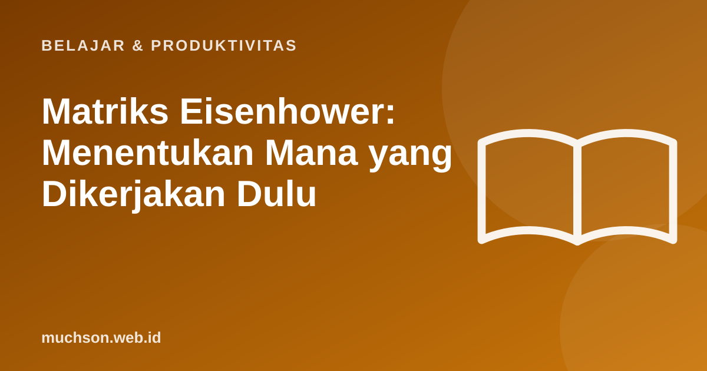

Beranda › Artikel › Belajar & Produktivitas
Belajar & ProduktivitasMatriks Eisenhower: Menentukan Mana yang Dikerjakan Dulu
Daftar tugas yang panjang membuat kita mengerjakan yang paling berisik, bukan yang paling berharga. Matriks Eisenhower membantu memisahkan yang mendesak dari yang penting, dua hal yang sering tertukar.

Empat kuadran
Latih menggolongkan
Cara memakainya tiap hari
Mengapa penting
Bila Anda terus-menerus memadamkan "kebakaran", mungkin banyak tugas penting yang tidak dijadwalkan sehingga berubah menjadi mendesak. Memberi waktu pada yang penting mencegah krisis.
Tanya jawab
Siapa penemu matriks ini?
Dikaitkan dengan Dwight D. Eisenhower, yang dikenal membedakan hal mendesak dan penting. Bentuk matriksnya dipopulerkan kemudian oleh penulis manajemen.
Apa yang dilakukan bila semuanya terasa penting?
Tanyakan: apa akibatnya bila tidak dikerjakan, dan oleh siapa? Itu membantu memilah prioritas yang sebenarnya.
Bagaimana bila atasan menetapkan semua sebagai mendesak?
Diskusikan prioritas secara terbuka. Tunjukkan konsekuensi bila semuanya dikerjakan bersamaan.